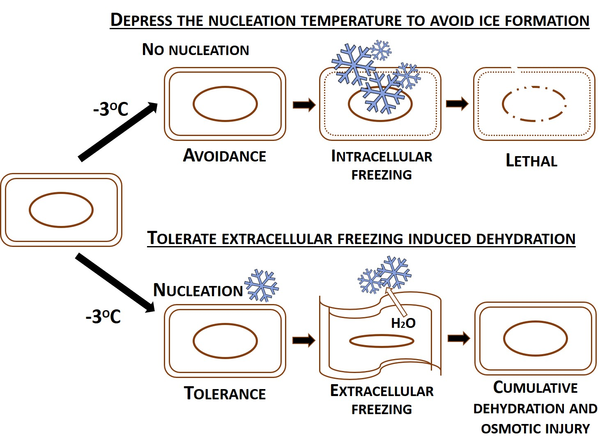
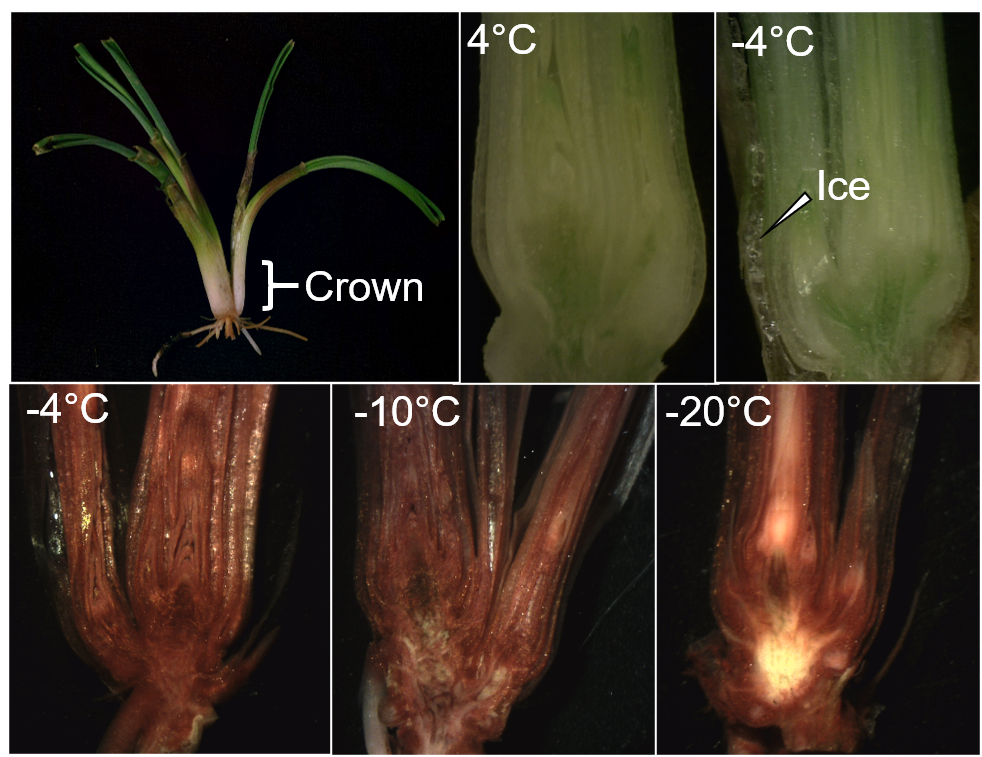
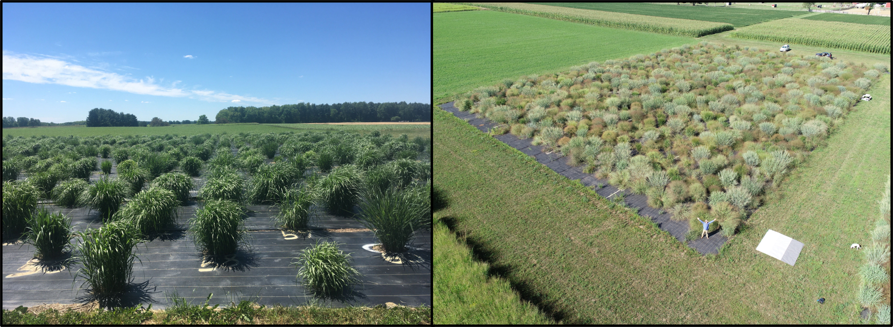

Current Research
Plant cold hardiness is contingent on the degree of tolerance and/or avoidance to freezing injury - a combination of low-temperature, mechanical, drought, osmotic, and oxidative stresses. Some plants have a remarkable ability to survive harsh overwintering conditions while many summer annual crops are susceptible to lethal injury at temperatures just below 0°C (Wisniewski, Willick, & Gusta 2017). I am fascinated by this diversity and how plants manipulate the temperature and site of ice nucleation to enhance cold hardiness.
Cellular and tissue level ice segregation strategies
Protection of meristem tissues in overwintering plant organs is essential for recovery in the Spring. I previously discovered that winter cereal crowns, the critical organ for overwintering survival, develop leaf sheath ice sinks that dehydrate and promote supercooling in apical meristem tissues (Willick et al. 2019). Cold-induced modifications to tissue connected to the shoot apical meristem are believed to inhibit ice propagation (Willick et al. 2018, 2019). Tissue level ice segregation strategies are not unique to cereal crowns and may play a role in the overwintering survival of other belowground perennating plant organs. Currently I am investigating how switchgrass and perennial monkeyflower control intrinsic rates of ice nucleation in rhizomes and its relationship to overwintering local adaptations.
Crowns sectioned after cooling to 4°C and -4°C to observe the formation of an ice sink between the leaf sheath (top right). Tetrazolium chloride vital staining reveals alive (red) or injured (off-white) tissues in cereals cooled to -4°C (no injury), -10°C (injury to vascular tissue), and -20°C (lethal injury to the apical meristem and vascular tissues).
Influence of climate warming on overwintering injury
Increasing winter temperatures and precipitation can change the type of overwintering stress experienced by plants. In Western Canada, winter cereals that historically experience a freezing-induced desiccation stress may now be exposed to mid-winter thaws that rehydrate plant tissues and expose plants to a high-water freezing stress (Willick et al. 2020). Future crops will need to incorporate enhanced tolerance to multiple overwintering stresses.
We need a better understanding of how plants respond to a combination of sub-zero temperatures and water-related stress. My current research aims to tease apart the molecular mechanism differentiating these processes using switchgrass populations adapted to Continental (freezing desiccation) and Northeast United States (high-water freezing) environments.
Phenotypic variation among switchgrass populations in the Lowry Lab common garden at Kellogg Biological Research Station (Hickory Corners, MI). Photo credit: Robert Goodwin.